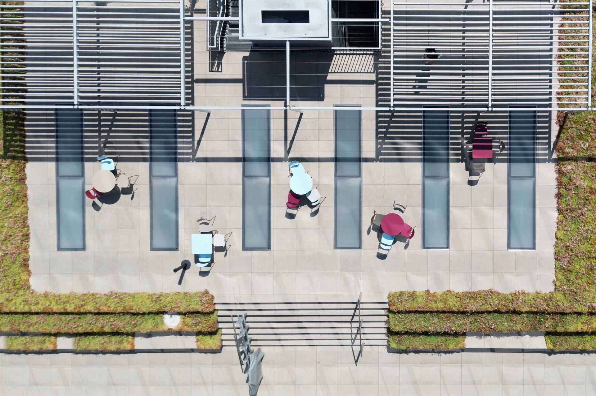
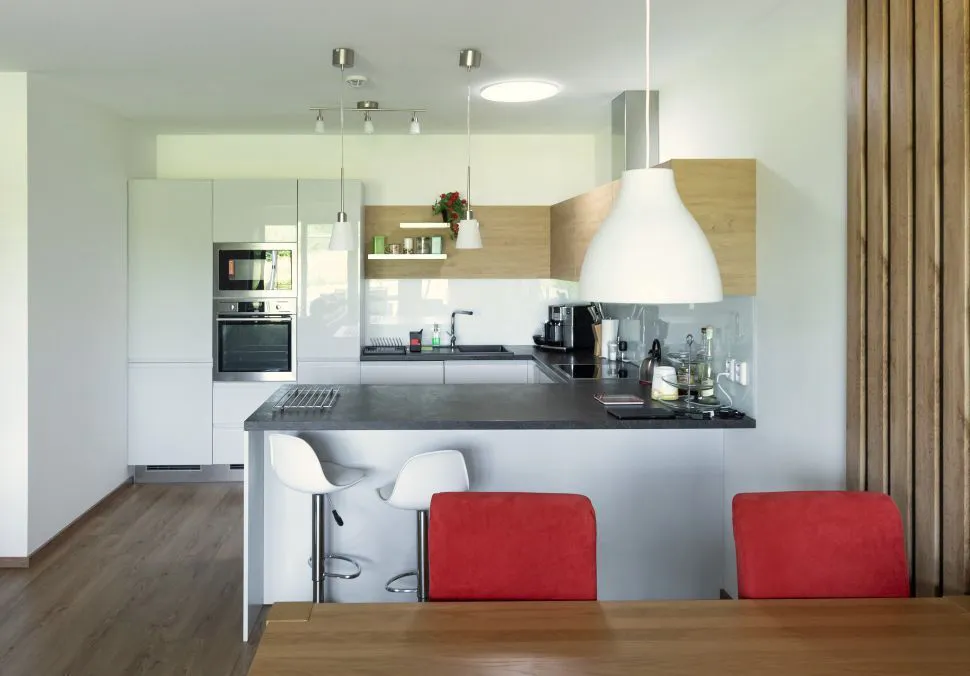
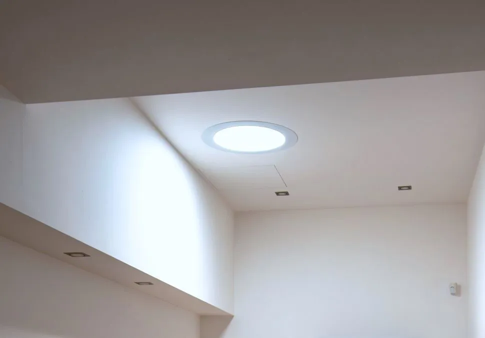
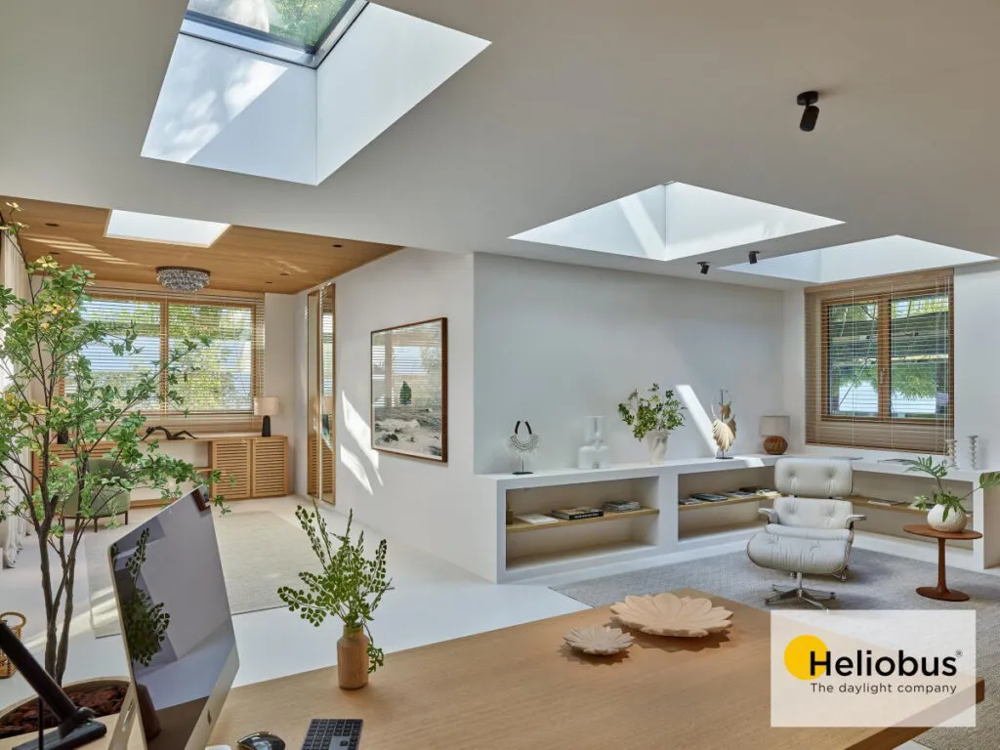
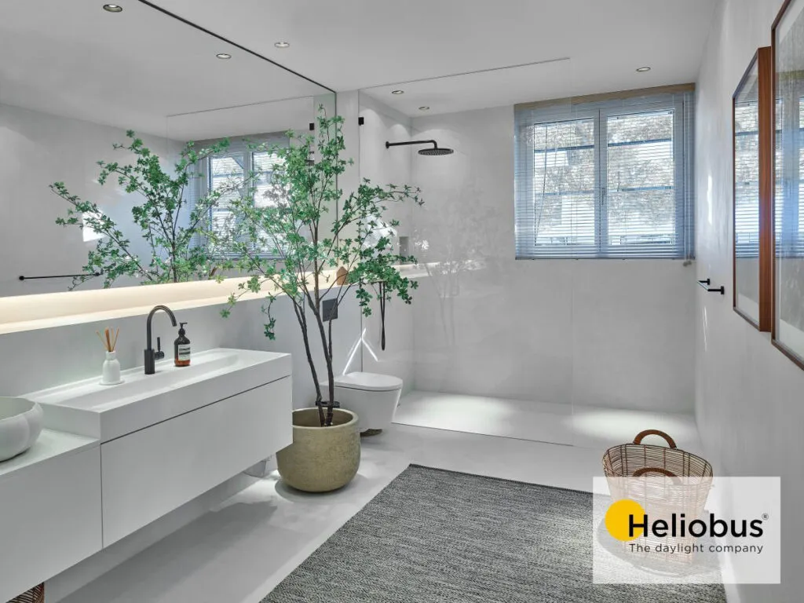
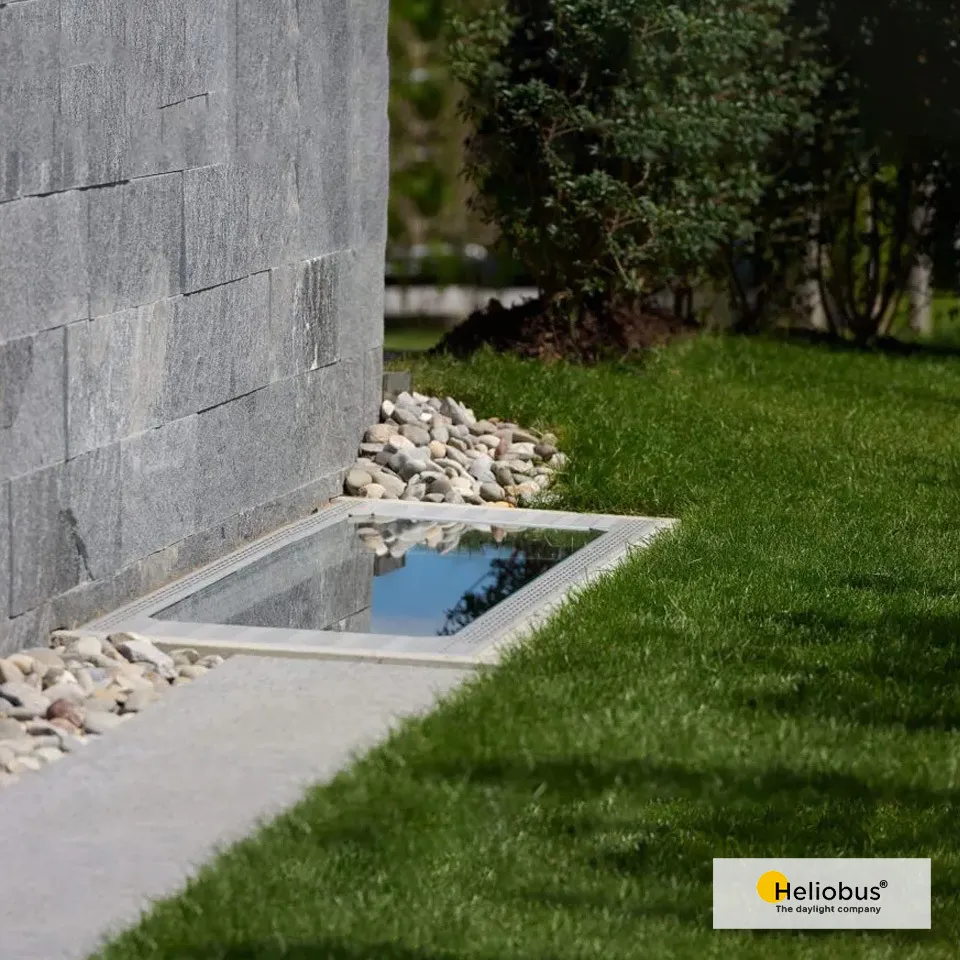
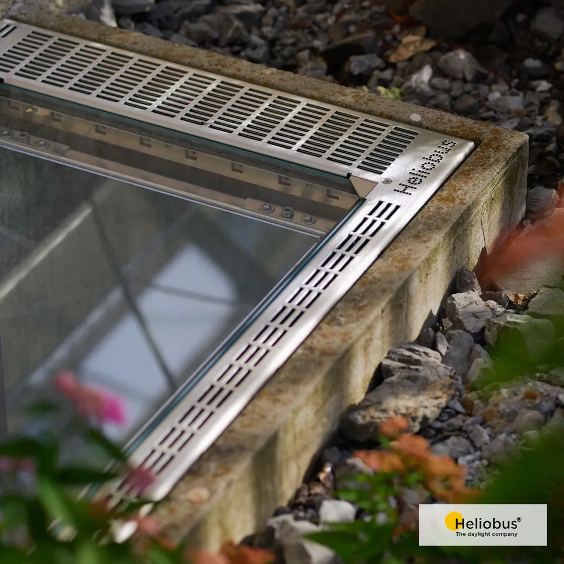
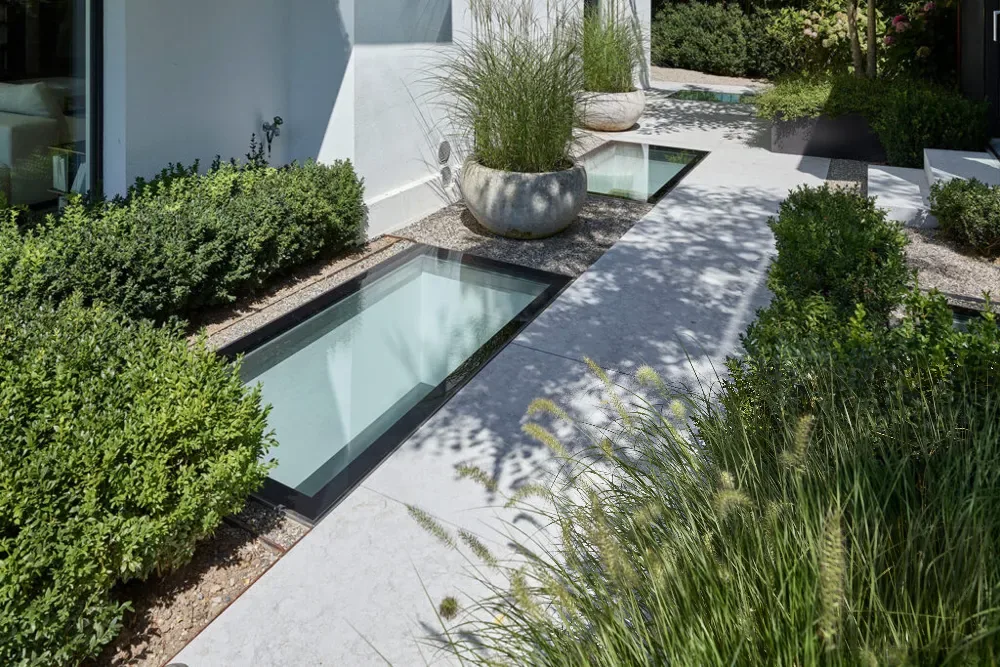
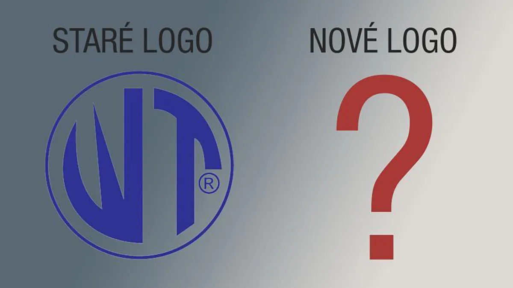

Zaměřeno na komplexní řešení osvětlení denním světlem
Červen 2025 · Novinka
Příběh značky a změna směru, tak lze nazvat současnou situaci firmy WT-WINDOWS TOMORROW s.r.o., která přivedla jako první na český trh světlovody. Právě na ně se dlouhá léta specializovala, nyní však přichází zásadní změna, posun od jednoproduktového zaměření ke komplexnímu řešení osvětlení denním světlem. Vedle světlovodů Solatube totiž nabízí také pochozí (a dokonce i pojezdové) světlíky GLASSFLOOR a zrcadlové světelné šachty MIRROR SHAFT. Obojí švýcarské značky HELIOBUS.
Nová vize zní PŘINÁŠET DENNÍ SVĚTLO DO INTERIÉRŮ KOMPLEXNĚ. Tedy i tam, kde to dříve vůbec nebylo možné. Všechny produkty přitom tvoří promyšlený systém určený pro střechy, pochozí plochy i podzemní prostory. WT-WINDOWS TOMORROW s.r.o. tak reaguje na současné požadavky architektů i investorů moderních staveb.


3 řešení osvětlení denním světlem
Světlovody Solatube® nabízí WT-WINDOWS TOMORROW s.r.o. od roku 1997, v její nabídce jsou stále a dlouho ještě budou. Pouze však špičkové originály s nejvyšší účinností.
Skleněné pochozí a pojezdové světlíky GLASSFLOOR® od švýcarské firmy HELIOBUS® jsou v ČR prodávané od roku 2022. Jde tedy dosud o novinku v portfoliu. Novinku, která představuje luxusní, designově čisté a odolné řešení, které je vhodné pro náročné realizace. Světlíky propouští dostatek přirozeného denního světla skrze pochozí nebo dokonce i pojezdové konstrukce.
Zrcadlové světelné šachty MIRROR SHAFT® opět od švýcarské firmy HELIOBUS® jsou naprostou novinkou, na českém trhu se objevily letos a cestu si razí hodně širokými lokty. Jde o unikátní řešení pro osvětlení suterénů a jiných podzemních prostor skutečným denním světlem. WT-WINDOWS TOMORROW s.r.o. představila zrcadlové světelné šachty na českém trhu jako první.




Kvalita bez kompromisů
Všechny tři typy produktů jsou vysoce kvalitní, žádná „střední třída“ ani kompromisní řešení. Firma cílí pouze na klienty, kteří hledají to nejlepší, tedy na architekty, developery, investory a majitele luxusních domů. Důraz klade na funkčnost, estetiku, dlouhou životnost, vysokou účinnost a špičkové materiály.

Po letech stagnace v úzkém zaměření tedy firma WT-WINDOWS TOMORROW s.r.o. přirozeně dospěla k rozšíření své vize. Dnes je komplexním specialistou na denní světlo a míří ještě dál. Nová energie, nové ambice a nový směr jsou teprve začátkem. A jelikož se firma mění obsahově i hodnotově, čímž se posouvá do nové éry, otevírá se také otázka, zda by si tato změna nezasloužila i nový vizuální symbol. Nové logo. To sice zatím zůstává stejné, ale možná nastal čas na nový vizuální jazyk, který odrazí současnou sílu, komplexnost a budoucnost značky. Nejde totiž o žádnou změnu pro změnu, ale o symbol přirozené proměny, která už probíhá.

Budoucnost světla
Firma WT-Windows Tomorrow s.r.o. se proměnila v nositele nového standardu přirozeného světla v architektuře. Zůstává stále stejná poctivost, ale přibývá nový rozsah, nový přístup a nová síla. Budoucnost denního světla právě začíná a přichází právě skrze inovativní řešení osvětlení denním světlem od WT-Windows Tomorrow.